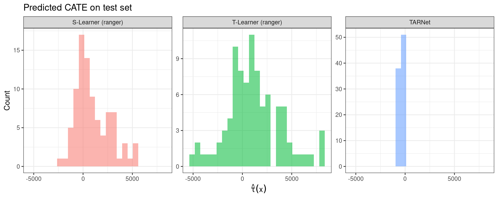
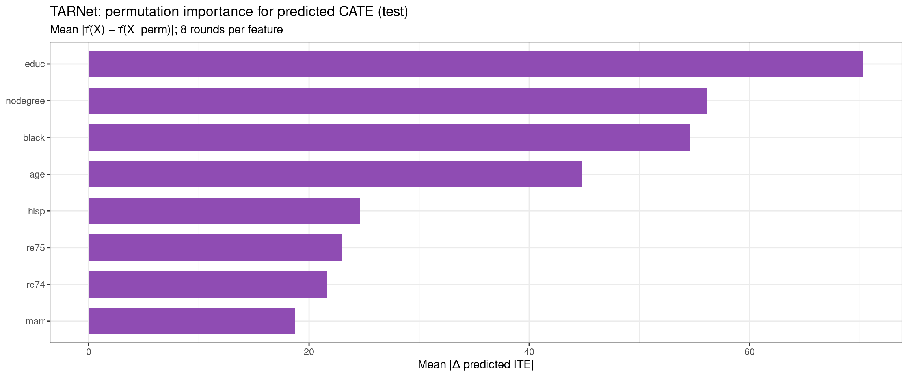

Code
packages <- c(
"tidyverse",
"plyr",
"RCausalML",
"causaldata",
"mlbench",
"xgboost",
"future"
)

This notebook demonstrates how to fit a TARNet (Treatment-Agnostic Representation Network) using the R package RCausalML.
Note on dependencies: TARNet requires torch (recommended). If torch is unavailable, RCausalML falls back to a lightweight placeholder model — the workflow is identical, but the deep shared-representation architecture will not be trained.
TARNet is a neural network architecture for causal inference, specifically designed to estimate individualized treatment effects (ITE) from observational data. It was introduced by Shalit, Johansson, and Sontag (2017) in “Estimating individual treatment effects: generalization bounds and algorithms.”
Two core challenges motivate TARNet’s design:

TARNet addresses both through a three-part architecture:
The shared representation feeds into two separate sub-networks — one per treatment arm:
Each head trains only on observed samples from its respective arm, but both operate on the same learned representation.
For any individual, features X pass through the shared encoder once, then through both heads:
\[\text{ITE}(x) = \hat{y}_1 - \hat{y}_0 = h_1(\Phi(x)) - h_0(\Phi(x))\]
The result is an individual-level causal estimate: how much better (or worse) this specific patient fares with treatment versus without.
The shared encoder Φ is trained to be agnostic to treatment assignment — encoding a patient’s underlying features, not which group they belonged to. This discourages the network from learning spurious correlations driven by selection bias.
The related CFRNet variant (from the same paper) extends TARNet by adding an IPM regularizer (Integral Probability Metric) that explicitly penalizes distributional divergence between treated and control representations, reducing covariate shift more aggressively.
| Approach | Key idea | Limitation |
|---|---|---|
| S-Learner | Single model; treatment as a feature | Treatment effect can be smoothed away |
| T-Learner | Separate models per treatment arm | No shared learning; high variance |
| TARNet | Shared representation + separate heads | Balances shared features with arm-specific prediction |
| CFRNet | TARNet + IPM regularizer | More aggressive covariate shift correction |
TARNet is a foundational architecture in the Causal ML toolkit and serves as a standard baseline in treatment effect estimation benchmarks, including the IHDP and Jobs datasets.
TARNet is implemented in RCausalML as tarnet(). With torch installed, this trains a deep neural network with the architecture and loss described above. If torch is not available, it falls back to a simpler model that mimics the two-head idea but without learned representation ().
Following R packages are required to run this notebook. If any of these packages are not installed, you can install them using the code below:
tidyverse, plyr, RCausalML, causaldata, mlbench, xgboost, future
packages <- c(
"tidyverse",
"plyr",
"RCausalML",
"causaldata",
"mlbench",
"xgboost",
"future"
)# Install missing packages
# new_packages <- packages[!(packages %in% installed.packages()[, "Package"])]
# if (length(new_packages)) install.packages(new_packages)# Load packages with suppressed messages
invisible(lapply(packages, function(pkg) {
suppressPackageStartupMessages(library(pkg, character.only = TRUE))
}))# Check loaded packages
cat("Successfully loaded packages:\n")Successfully loaded packages: [1] "package:future" "package:xgboost" "package:mlbench"
[4] "package:causaldata" "package:RCausalML" "package:plyr"
[7] "package:lubridate" "package:forcats" "package:stringr"
[10] "package:dplyr" "package:purrr" "package:readr"
[13] "package:tidyr" "package:tibble" "package:ggplot2"
[16] "package:tidyverse" "package:stats" "package:graphics"
[19] "package:grDevices" "package:utils" "package:datasets"
[22] "package:methods" "package:base" Full TARNet uses torch. Install once if needed:
# install.packages("torch")
# library(torch)
# torch::install_torch()We use NSW (nsw_mixtape) from causaldata: treatment treat, outcome re78, covariates age, educ, black, hisp, marr, nodegree, re74, re75. After dropping incomplete rows, we split into training and test sets (80/20); covariates are standardized using the training mean and SD only. All models are fit on the training fold and evaluated on the held-out test fold.
set.seed(42)
fast_run <- Sys.getenv("CAUSALML_FAST_RENDER", "TRUE") == "TRUE"
num_trees_rf <- if (fast_run) 100L else 500L
epochs_tarnet <- if (fast_run) 30L else 100L
if (!requireNamespace("causaldata", quietly = TRUE)) install.packages("causaldata")
data(nsw_mixtape, package = "causaldata")
df <- as.data.frame(nsw_mixtape)
df$treat <- as.integer(df$treat)
y_col <- "re78"
t_col <- "treat"
x_cols <- c("age", "educ", "black", "hisp", "marr", "nodegree", "re74", "re75")
df <- df[complete.cases(df[, c(y_col, t_col, x_cols)]), ]
p_train <- 0.8
n <- nrow(df)
idx <- sample.int(n, size = round(p_train * n))
df_train <- df[idx, ]
df_test <- df[-idx, ]
X_train_raw <- as.matrix(df_train[, x_cols])
X_test_raw <- as.matrix(df_test[, x_cols])
cm <- colMeans(X_train_raw)
cs <- apply(X_train_raw, 2, stats::sd)
cs[cs == 0] <- 1
X_train <- scale(X_train_raw, center = cm, scale = cs)
X_test <- scale(X_test_raw, center = cm, scale = cs)
colnames(X_train) <- colnames(X_test) <- x_cols
t_train <- as.integer(df_train[[t_col]])
y_train <- as.numeric(df_train[[y_col]])
t_test <- as.integer(df_test[[t_col]])
y_test <- as.numeric(df_test[[y_col]])
cat(
"Train n =", nrow(X_train), "| Test n =", nrow(X_test),
"| p =", ncol(X_train), "| TARNet source: R/causalDeepNet.R\n"
)Train n = 356 | Test n = 89 | p = 8 | TARNet source: R/causalDeepNet.RTARNet (tarnet()) trains with mini-batches on the training fold (val_split holds out a fraction of training rows for internal monitoring). S-Learner and T-Learner use ranger forests on the same scaled covariates — a standard tree-based baseline on observational data without ground-truth ITE.
if (requireNamespace("torch", quietly = TRUE)) {
library(torch)
torch_manual_seed(42)
}
fit_tarnet <- tarnet(
X_train, t_train, y_train,
hidden = c(200L, 200L, 100L),
batch_size = 64L,
val_split = 0.2,
epochs = epochs_tarnet,
lr = 0.001,
verbose = TRUE
)
fit_sl <- fit(
SLearner(learner = "ranger", control_name = 0),
X_train, t_train, y_train,
num.trees = num_trees_rf
)
fit_tl <- fit(
TLearner(learner = "ranger", control_name = 0),
X_train, t_train, y_train,
num.trees = num_trees_rf
)
cat("Fitted backends — TARNet:", fit_tarnet$type,
"| S-Learner:", fit_sl$models[[1]]$type,
"| T-Learner:", fit_tl$model_0$type, "\n")Fitted backends — TARNet: tarnet_torch | S-Learner: ranger | T-Learner: ranger For each unit, \(\hat{\tau}(x) = \hat{Y}(1 \mid x) - \hat{Y}(0 \mid x)\) and \(\widehat{\mathrm{ATE}} = \frac{1}{n}\sum_i \hat{\tau}(x_i)\) on the test fold. Because NSW has no counterfactual labels, we also report factual outcome MSE — how well each method predicts the observed outcome under the assigned treatment — on the test set.
pred_ite <- function(fit, Xm) {
r <- predict(fit, as.matrix(Xm))
if (is.list(r)) {
if (!is.null(r$ite)) return(as.numeric(r$ite))
if (!is.null(r$predictions)) return(as.numeric(r$predictions))
}
as.numeric(r)
}
factual_mse_tarnet <- function(fit, X, t, y) {
if (identical(fit$type, "tarnet_torch") && requireNamespace("torch", quietly = TRUE)) {
fit$model$eval()
torch::with_no_grad({
x_t <- torch::torch_tensor(X, dtype = torch::torch_float32())
t_t <- torch::torch_tensor(t, dtype = torch::torch_float32())
out <- fit$model(x_t)
y_hat <- (1 - t_t$squeeze()) * out$y0 + t_t$squeeze() * out$y1
mean((y - as.numeric(y_hat))^2)
})
} else {
ite <- pred_ite(fit, X)
y0 <- y - ite * t
y1 <- y0 + ite
y_hat <- (1 - t) * y0 + t * y1
mean((y - y_hat)^2)
}
}
factual_mse_meta <- function(fit, X, t, y) {
comp <- predict(fit, X, return_components = TRUE, verbose = FALSE)
y_hat <- (1 - t) * comp$yhat_cs[[1]] + t * comp$yhat_ts[[1]]
mean((y - y_hat)^2)
}
ite_tarnet <- pred_ite(fit_tarnet, X_test)
ite_sl <- pred_ite(fit_sl, X_test)
ite_tl <- pred_ite(fit_tl, X_test)
ate_tarnet <- mean(ite_tarnet)
ate_sl <- mean(ite_sl)
ate_tl <- mean(ite_tl)
naive_ate <- mean(y_test[t_test == 1]) - mean(y_test[t_test == 0])
mse_tarnet <- factual_mse_tarnet(fit_tarnet, X_test, t_test, y_test)
mse_sl <- factual_mse_meta(fit_sl, X_test, t_test, y_test)
mse_tl <- factual_mse_meta(fit_tl, X_test, t_test, y_test)
compare_tbl <- data.frame(
Learner = c("TARNet", "S-Learner (ranger)", "T-Learner (ranger)", "Naive diff-in-means"),
ATE_test = c(ate_tarnet, ate_sl, ate_tl, naive_ate),
Factual_MSE_test = c(mse_tarnet, mse_sl, mse_tl, NA_real_),
stringsAsFactors = FALSE
)
print(compare_tbl) Learner ATE_test Factual_MSE_test
1 TARNet -419.0548 62233506
2 S-Learner (ranger) 1003.6435 61676883
3 T-Learner (ranger) 1135.4602 60922469
4 Naive diff-in-means 4130.3097 NAate_sl_ci <- estimate_ate(fit_sl, X = X_test, treatment = t_test, y = y_test,
return_ci = TRUE, bootstrap_ci = !fast_run,
n_bootstraps = if (fast_run) 100L else 500L)
ate_tl_ci <- estimate_ate(fit_tl, X = X_test, treatment = t_test, y = y_test,
return_ci = TRUE, bootstrap_ci = !fast_run,
n_bootstraps = if (fast_run) 100L else 500L)
cat("\nS-Learner ATE (test) with CI:", round(ate_sl_ci$ate, 2),
"(", round(ate_sl_ci$ate_lb, 2), ",", round(ate_sl_ci$ate_ub, 2), ")\n")
S-Learner ATE (test) with CI: 1003.64 ( -2887.25 , 4894.54 )T-Learner ATE (test) with CI: 1135.46 ( -2750.83 , 5021.75 )cate_df <- data.frame(
CATE = c(ite_tarnet, ite_sl, ite_tl),
Learner = rep(
c("TARNet", "S-Learner (ranger)", "T-Learner (ranger)"),
each = length(ite_tarnet)
)
)
ggplot2::ggplot(cate_df, ggplot2::aes(x = CATE, fill = Learner)) +
ggplot2::geom_histogram(alpha = 0.55, position = "identity", bins = 25) +
ggplot2::facet_wrap(~ Learner, ncol = 3, scales = "free_y") +
ggplot2::labs(
title = "Predicted CATE on test set",
x = expression(hat(tau)(x)),
y = "Count"
) +
ggplot2::theme_bw() +
ggplot2::theme(legend.position = "none")
We measure how much predicted CATE ((X)) on the test fold depends on each covariate using permutation importance: for feature (j), permute column (j) within the validation matrix, recompute (), and take the mean absolute change (|(X) - (X^{}_j)|), averaged over several random permutations. This summarizes the fitted CATE surface; it is not a causal attribution of heterogeneity.
imp_tarnet <- NULL
if (nrow(X_test) >= 10L) {
p <- ncol(X_test)
feat_names <- colnames(X_test)
if (is.null(feat_names)) feat_names <- x_cols
n_rep <- 8L
set.seed(4343L)
ite_base <- pred_ite(fit_tarnet, X_test)
imp_mat <- matrix(NA_real_, nrow = n_rep, ncol = p)
for (r in seq_len(n_rep)) {
for (j in seq_len(p)) {
Xp <- X_test
Xp[, j] <- sample(Xp[, j])
imp_mat[r, j] <- mean(abs(ite_base - pred_ite(fit_tarnet, Xp)), na.rm = TRUE)
}
}
imp_mean <- colMeans(imp_mat, na.rm = TRUE)
imp_tarnet <- data.frame(
feature = feat_names,
importance = imp_mean,
stringsAsFactors = FALSE
)
print(
ggplot2::ggplot(
imp_tarnet,
ggplot2::aes(
x = stats::reorder(factor(feature), importance),
y = importance
)
) +
ggplot2::geom_col(fill = "#8F4CB3", width = 0.72) +
ggplot2::coord_flip() +
ggplot2::labs(
title = "TARNet: permutation importance for predicted CATE (test)",
subtitle = paste0("Mean |\u03c4\u0302(X) \u2212 \u03c4\u0302(X_perm)|; ", n_rep, " rounds per feature"),
x = NULL,
y = "Mean |\u0394 predicted ITE|"
) +
ggplot2::theme_bw()
)
}
TARNet is a powerful architecture for estimating individualized treatment effects from observational data. By learning a shared representation of covariates and then fitting separate heads for each treatment, it can capture complex relationships while mitigating selection bias. In this notebook, we split NSW data into training and test folds, fit TARNet alongside S-Learner and T-Learner (ranger) baselines, and compared ATE and factual MSE on the held-out test set. Permutation importance summarizes which covariates the fitted TARNet CATE surface is most sensitive to. On real-world data there is no ground-truth ITE; lower factual MSE indicates better outcome prediction under observed treatment, while ATE differences reflect how each method extrapolates counterfactuals. TARNet can be further improved with balancing regularization (CFRNet) or propensity-aware training (DragonNet).